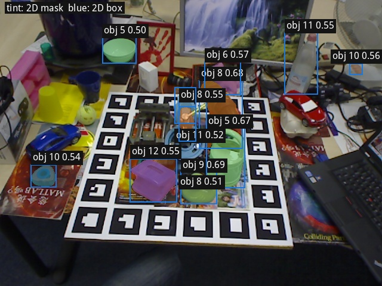
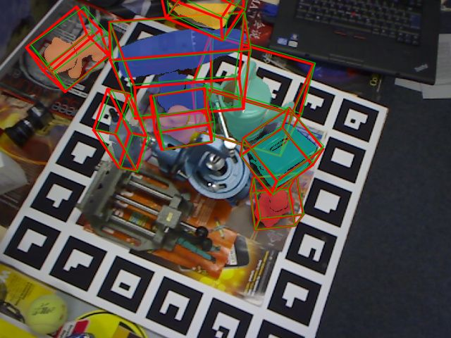

6D pose tasks and interfaces6D 位姿任务与接口
6D pose estimation describes the overall problem of recovering object orientation and translation. The integrated 2D-to-6D tutorial explains its shared processing stages. This chapter organizes the interfaces by task: localization uses supplied object identities and instance counts; detection finds instances without those priors; tracking updates initialized poses over successive frames. Localization and detection follow the BOP task definitions.
6D 位姿估计统指求解物体旋转与平移的问题；2D 到 6D 一体化教程介绍共用的处理流程。本章按具体任务组织接口：定位使用已知物体类别与实例数量，检测在不提供这些先验时寻找实例，跟踪则在连续帧中更新已经初始化的位姿。定位与检测采用 BOP 的任务定义。
The common estimator accepts supplied regions or regions predicted by a 2D detector. Both input routes support one or several categories and instances. Tracking updates start from initialized poses and can batch established tracks. See the interface combination table for supported input routes.
共用的估计器既可接收外部提供的区域，也可接收 2D 检测器预测的区域，两种输入路径均支持单个或多个类别与实例。跟踪更新从已初始化的位姿出发，并可批量处理已建立的轨迹。支持的输入形式见接口组合表。
Input and coordinate conventions输入与坐标约定
Pose estimation receives depth and mesh vertices in meters; camera intrinsics are in pixels. load_scene in wapr/scene_files.py reads RGB, depth, camera.json and objects.json from a custom folder. For depth images, depth_scale converts stored values to millimeters, followed by division by 1000; depth.npy already contains meters and ignores that scale. Mesh vertices are converted according to mesh_unit (mm or m). The returned meshes maps obj_id to (mesh, diameter_m). File names and JSON fields are specified in Custom data.
位姿估计接收米单位的深度与网格顶点，相机内参以像素计。wapr/scene_files.py 中的 load_scene 从自定义目录读取 RGB、深度、camera.json 与 objects.json。深度图的存储值先乘以 depth_scale 转为毫米，再除以 1000；depth.npy 已采用米，不应用该系数。网格顶点按 mesh_unit（mm 或 m）转换，返回的 meshes 将 obj_id 映射到 (mesh, diameter_m)。文件名与 JSON 字段见自定义数据。
Region inputs and checkpoint selection区域输入与模型选择
estimate_one_category_one_instance requires mask or bbox_xywh; omitting both raises ValueError. A mask selects wapr_w_mask. A box-only input selects wapr_wo_mask, with the box filled to define the depth region. estimate_many_categories_many_instances accepts masked and box-only inputs together: WAPR batches the inputs by checkpoint, then SAPR and WBPS process the combined rows. SAPR and WBPS do not use a mask channel.
estimate_one_category_one_instance 需要 mask 或 bbox_xywh，两者均未提供时抛出 ValueError。掩码输入选择 wapr_w_mask；仅提供包围盒时选择 wapr_wo_mask，并将框内区域用于深度处理。estimate_many_categories_many_instances 可同时接收掩码与纯框输入：WAPR 按所用权重分别组成批次，随后 SAPR 和 WBPS 处理合并后的行。SAPR 和 WBPS 不使用掩码通道。
Initialization, localization, detection and mask-guided correction use the masked checkpoint when a visible mask is available. Subsequent tracking updates use wapr_wo_mask from the previous pose. A tracked target mask may initialize translation from sensor depth through center_pose_4x4, while retaining the previous rotation; that region is not supplied as WAPR's seventh input channel.
首帧初始化、定位、检测及掩码引导的修正在有可见掩码时使用带掩码权重。后续跟踪更新从上一帧位姿出发，使用 wapr_wo_mask。跟踪得到的目标掩码可通过 center_pose_4x4 根据传感器深度设置平移，同时保留上一帧旋转；该区域不作为 WAPR 的第七个输入通道。
prepare_mesh subtracts the mesh's axis-aligned bounding-box center and stores this meter-valued offset as metadata["model_center"]. guess_translation initializes translation from depth inside the supplied mask; a box-only input uses the region filled by mask_from_bbox. make_crop_pair in wapr/ogl.py prepares square network crops. The recipe uses refine_crop_ratio = 1.2 times the diameter for refinement, wbps_crop_ratio = 1.1 for scoring, and crop_px = 160 pixels per side. The returned pose transforms object coordinates into the OpenCV camera frame, with +Z forward and translation in meters.
prepare_mesh 减去网格的轴对齐包围盒中心，并将该偏移以米记录为 metadata["model_center"]。guess_translation 根据输入掩码内的深度初始化平移；仅提供包围盒时，使用 mask_from_bbox 填充的区域。wapr/ogl.py 中的 make_crop_pair 准备网络使用的正方形裁剪。配置设置修正阶段的直径倍率 refine_crop_ratio = 1.2、评分阶段的倍率 wbps_crop_ratio = 1.1，以及裁剪边长 crop_px = 160 像素。返回位姿将物体坐标变换到 OpenCV 相机坐标系，+Z 向前，平移单位为米。
Rotation hypothesis sampling旋转候选采样
make_view_dirs in wapr/estimator.py generates unit directions in the OpenCV camera frame, with +Z forward. Counts of 4, 6, 8, 12 and 20 use the vertices of a tetrahedron, octahedron, cube, icosahedron and dodecahedron, respectively; other counts use Fibonacci-sphere sampling. The pose recipe defaults to n_view = 4. This parameter controls pose initialization; the detector's template_views = 42 controls CAD template generation.
wapr/estimator.py 中的 make_view_dirs 在 OpenCV 相机坐标系（+Z 向前）中生成单位方向。数量为 4、6、8、12、20 时，分别采用正四面体、正八面体、立方体、正二十面体及正十二面体的顶点；其他数量采用斐波那契球面采样。位姿估计配置默认设置 n_view = 4。该参数控制位姿初始化；检测器的 template_views = 42 则用于生成 CAD 模板。
make_view_rots aligns the object's +Z axis with each sampled direction, then rotates about camera +Z by 2π k / n_inplane. The default n_inplane = 3 produces 4 × 3 = 12 initial rotations, with shape (n_view * n_inplane, 3, 3). estimate_one_category_one_instance, estimate_many_categories_many_instances and estimate_frame_many_categories_many_instances accept both parameters; None uses the defaults in wapr/recipe.py. Same-frame hypotheses are rendered, refined and scored in batches.
make_view_rots 先将物体 +Z 轴对齐到各采样方向，再绕相机 +Z 轴旋转 2π k / n_inplane。默认 n_inplane = 3，产生 4 × 3 = 12 个初始旋转，张量形状为 (n_view * n_inplane, 3, 3)。estimate_one_category_one_instance、estimate_many_categories_many_instances 和 estimate_frame_many_categories_many_instances 均接收这两个参数；传入 None 时采用 wapr/recipe.py 中的默认值。同帧候选的渲染、修正与评分按批处理执行。
Refinement and runtime configuration位姿修正与推理配置
The initialization estimator applies three WAPR updates followed by two SAPR updates. Each predicts rotation and translation. The rotation vector passes through tanh component by component, then uses bounds of 0.70 radians per component for WAPR and 0.35 for SAPR. These are component bounds: the corresponding total rotation-angle bounds are √3 × 0.70 (about 69.5°) and √3 × 0.35 (about 34.7°) per update. Values remain explicit in wapr/recipe.py; the public initialization call does not expose a rotation-bound or single-stage switch. See checkpoint roles.
初始化估计器先执行三次 WAPR 更新，再执行两次 SAPR 更新，每次均预测旋转与平移。旋转向量逐分量经过 tanh，再分别乘以 WAPR 的 0.70 弧度或 SAPR 的 0.35 弧度上限。这是分量幅值上限，对应单步总旋转角上限分别为 √3 × 0.70（约 69.5°）与 √3 × 0.35（约 34.7°）。这些值显式保留在 wapr/recipe.py；公开初始化接口不提供旋转上限或单阶段开关。权重作用见权重说明。
backend = "trt" loads four FP16 engines. Source installations compile them explicitly following the installation instructions. A newly built wheel compiles all four on first estimator construction only if all four are absent. Partial or obsolete engine sets raise an error; this backend does not silently fall back to PyTorch[3].
backend = "trt" 载入四份 FP16 引擎。源码安装需按安装说明显式编译；新构建的 wheel 仅在四份引擎均不存在时，于首次构造估计器时编译全部引擎。部分缺失或 profile 不匹配的引擎会报错，此后端不隐式回退到 PyTorch[3]。
visualize = True saves red 6D boxes and rendered contours through visualize_6d_pose; False disables this output. visualize_path defaults to outputs/vis. The separate visualize_2d_detection call draws blue 2D boxes and masks. Usage of both functions is documented under result visualization.
visualize = True 时，通过 visualize_6d_pose 保存红色 6D 框与渲染轮廓；False 关闭该输出。visualize_path 默认指向 outputs/vis。独立的 visualize_2d_detection 调用绘制蓝色 2D 框与掩码。两种函数的用法见结果可视化。
Wide-angle rotation correction广角旋转修正对照
These three saved comparisons isolate rotation correction. WAPR, MegaPose[2]'s RGB-D refiner and FoundationPose[1]'s refiner start from the same perturbed rotation, with translation fixed to ground truth, and each performs five refinement updates. This controlled rotation experiment differs from the released initialization pipeline's three WAPR and two SAPR updates. It illustrates the refiners' behavior on individual large rotation errors, rather than automatic detection or aggregate benchmark accuracy.
这三组保存的对照单独考察旋转修正。WAPR、MegaPose[2] 的 RGB-D 位姿修正模型与 FoundationPose[1] 的位姿修正模型从相同的扰动旋转出发，平移固定为真值，各执行五次修正。该旋转对照实验与发布版初始化流程的三次 WAPR、两次 SAPR 更新不同，用于说明模型面对单个较大旋转误差时的表现，不作为自动检测或完整基准精度。


YCB-V clamp, 120° about an oblique axis pointing right, down and toward the camera. After five updates: WAPR 2°, MegaPose 90°, FoundationPose 65°. Errors use the nearer of the two poses related by the clamp's 180° symmetry.
YCB-V 夹钳，绕朝右、朝下且朝向相机的斜轴扰动 120°。五次更新后：WAPR 2°、MegaPose 90°、FoundationPose 65°。误差按夹钳 180° 对称的两个等价姿态中较近者计算。
In each row, the second column shows the shared initial pose in that method's color; later columns show refinement results. Large-angle correction motivates sampling a small set of coarse rotations before refinement and selection. These pictures do not measure that full localization or detection workflow.
每行第二列用该方法的颜色画出共同的初始位姿，后续列展示修正结果。较大角度的修正能力使得从少量粗旋转候选开始、再修正与筛选成为可行方案；这些图没有测量完整的定位或检测流程。
BOP benchmark and evaluationBOP 基准与评测
BOP is the primary benchmark for evaluating the pose estimation method presented in the paper. Its task definitions and evaluation protocol provide the basis for algorithm comparison. This section describes benchmark inputs, prediction export and LM-O single-frame results. These visualizations illustrate the input conditions and inference outputs; they do not replace evaluation over the complete test set.
BOP 是本文位姿估计算法的主要评测基准，其任务定义与评测协议构成算法比较的依据。本节说明基准输入、预测结果导出及 LM-O 单帧结果。单帧可视化用于说明输入条件与推理输出，不能替代完整测试集上的定量评测。
examples/07_write_bop_pose_csv.py exports pose predictions as BOP CSV. With the default detector = "det2d", WAPRDet2D detects instances in each frame listed in test_targets_bop19.json. Pose inference batches all retained instances from the same frame, with independent candidate scoring for each instance. Set dataset in that file. An empty bop_path fetches that dataset’s one demo frame. A full test list still needs the official BOP root in bop_path. Frames, sources, and licenses are on the BOP Challenge page. Object ids in the targets file are not passed in.
examples/07_write_bop_pose_csv.py 将位姿预测导出为 BOP CSV。默认使用 detector = "det2d"，由 WAPRDet2D 检测 test_targets_bop19.json 所列各帧中的实例，再对同帧保留的实例批量估计位姿，各实例的候选独立评分。在该文件里填 dataset。bop_path 为空时，只取该数据集的一帧演示。完整测试列表仍要把官方 BOP 根目录填进 bop_path。帧、出处和许可证在BOP 挑战页。targets 文件里的物体编号不传入。
python examples/07_write_bop_pose_csv.pyWith detector = "json", set det_json to a published detection file. score_thr filters its 2D scores and iou_thresh applies cross-category mask suppression before batched pose estimation; these variables affect only this path. CSV columns are scene_id,im_id,obj_id,score,R,t,time: score contains WBPS score_6d, R is row-major, t is in millimeters, and time is in seconds. All rows of a frame share its measured time. The default path adds the synchronized hot detection/filter and pose segments, excluding their setup/warmup gap; this is not a continuous camera latency. The JSON path measures only the warmed pose batch, excluding the published detector and input filtering. Model/template/engine setup, mesh centering/normals/packing/GL upload and warmup are excluded in both paths.
detector = "json" 时，将 det_json 指向已公布的检测文件。score_thr 过滤文件中的 2D 分数，iou_thresh 在批量计算位姿估计前执行跨类别掩码抑制；这两个变量仅影响该路径。CSV 列为 scene_id,im_id,obj_id,score,R,t,time：score 写入 WBPS 的 score_6d，R 按行展开，t 为毫米，time 为秒。同帧各行使用相同的实测时间。默认路径相加同步实测的检测/筛选与位姿预热后运行阶段，排除中间准备/预热间隔，不是相机连续延迟。JSON 路径仅计预热后的位姿批量计算，不含公开检测器与输入筛选。模型/模板/引擎准备、网格居中/法线/打包/GL 上传及预热均不计入。
This format difference concerns the test-image/view list for 6D pose detection, not the 2D detection JSON or the pose CSV column layout. The included single frame checks inference and CSV formatting. The current exporter reads frame keys from test_targets_bop19.json; it does not yet parse test_targets_multiview_bop25.json. For BOP 2025 detection, use the latter file to select permitted test images and views, without using object identities or counts. Extending this example to that protocol requires a matching target-file reader. Complete evaluation also requires the official data from dataset resources, the chosen localization or detection setting, and the official task-specific metrics; the ROBI[6] nearest-candidate ADD display is a separate diagnostic.
这里的格式差异指 6D 位姿检测任务的测试图像/视角列表，不是 2D 检测结果 JSON，也不是位姿 CSV 列格式。随包单帧用于检查推理流程与 CSV 格式。当前导出器从 test_targets_bop19.json 读取帧编号，尚未解析 test_targets_multiview_bop25.json。BOP 2025 检测须由后者确定允许使用的测试图像与视角，不得使用物体类别或实例数量；采用该协议前需补充对应的目标文件读取。完整评测还需准备官方数据、选择定位或检测设定并使用相应的官方指标；ROBI[6] 最近候选 ADD 展示属于独立诊断。
LM-O benchmark inputs and single-frame resultsLM-O 基准输入与单帧结果
Example 02 uses LM-O scene 2, image 1, object 12 (holepuncher), with a known CAD mesh and the supplied BOP visible mask for instance 7. It estimates the object-to-camera pose from RGB-D and camera intrinsics. The annotated 6D pose is excluded from inference. This illustration demonstrates estimation conditioned on a supplied region; it does not evaluate automatic 2D detection.
示例 02 使用 LM-O 场景 2 第 1 帧中的物体 12（打孔器），输入已知 CAD 网格及第 7 个实例的 BOP 可见掩码，并根据 RGB-D 与相机内参估计物体到相机的位姿。标注的 6D 位姿不参与推理。该图展示给定区域条件下的位姿估计，不用于评价自动 2D 检测。
python examples/02_one_category_one_instance.py
One category, one instance. examples/02_one_category_one_instance.py calls estimate_one_category_one_instance once. LM-O scene 2, image 1, object 12, the holepuncher. The red 3D box is that one predicted pose. With visualize = True, the same picture is written to outputs/vis/single_image.jpg.
单类别、单实例。examples/02_one_category_one_instance.py 调用一次 estimate_one_category_one_instance。LM-O 场景 2 第 1 帧，物体 12，打孔器。红色 3D 框表示预测位姿。visualize = True 时，同一张图写到 outputs/vis/single_image.jpg。
For the input contract and API, see One category, one instance. For automatic region detection with known or unknown instance counts, see 6D pose localization and detection. Dataset sources and licensing are listed under LM-O resources.
输入约定与调用方式见单类别、单实例。需要自动检测区域时，可采用6D 位姿定位与检测中的已知数量或数量未知配置。数据来源与许可见 LM-O 资源。
RGB detection and segmentationRGB 检测与分割
Example 01 applies the CAD-template detector to LM-O scene 2, image 1. It saves all 86 returned detections in JSON and displays the twelve highest-scoring rows. This RGB detection run is separate from the supplied-mask pose example above. Detector assets are listed in model resources.
示例 01 在 LM-O 场景 2 第 1 帧运行 CAD 模板检测器，将返回的 86 条检测完整保存在 JSON 中，并显示分数最高的十二条。该 RGB 检测流程与上方给定掩码的位姿示例分别运行。检测器资源见模型资源。
python examples/01_one_rgb_detect_segment.py
Multi-object localization多物体位姿定位

examples/02_one_category_one_instance.py is image 1 of the same scene, under LM-O.LM-O 场景 2，第 307 帧。红色是预测位姿，绿色是真值位姿。examples/02_one_category_one_instance.py 用的一帧是同一场景的第 1 帧，见 LM-O。- One category, one instance单类别、单实例
- 6D pose localization and detection6D 位姿定位与检测
- 6D pose tracking6D 位姿跟踪
- Inference and renderer scaling推理与渲染后端性能
References and licenses参考文献与许可
- FoundationPose — NVIDIA custom source license. Comparison method source has a custom license; do not describe it as MIT or presume weights share the same grant.对照方法源码使用自定义许可；不能标为 MIT，也不能推定权重有相同授权。 · GitHubGitHub · License/notice 1许可/声明 1
- MegaPose — Apache-2.0. Comparison source; upstream model/data materials may have separate terms.对照源码；上游模型与数据可能有独立条款。 · GitHubGitHub · License/notice 1许可/声明 1
- torch — BSD License. Runtime dependency; dependencies and model/data assets retain their own licenses.运行依赖；依赖及模型/数据资源保留各自许可。 · Original source原始来源 · License/notice 1许可/声明 1 · License/notice 2许可/声明 2 ↩ ↩
- LM-O data — CC-BY-SA-4.0. Data and model excerpt, not the loader code.数据与模型摘录，不是读取代码。 · Original source原始来源 · GitHub: BOP toolkitGitHub：BOP 工具集
- TUD-L data — CC-BY-SA-4.0. Dataset terms are independent of WAPR source.数据许可独立于 WAPR 源码。 · Original source原始来源
- ROBI data — Not separately verified / 未单独核实. The saved public poses and dataset are credited to ROBI; an independent grant to redistribute them has not been verified.保存的公开位姿和数据均注明 ROBI 来源；其再分发授权尚未独立核实。 · GitHubGitHub
- YCB-Video (YCB-V) · Official BOP dataset pageBOP 官方数据页 · GitHub: PoseCNNGitHub：PoseCNN
Model weights and dataset/task assets may have separate terms. WAPR's source license does not replace them.模型权重、数据集与任务资源可能有独立条款；WAPR 源码许可不替代这些许可。